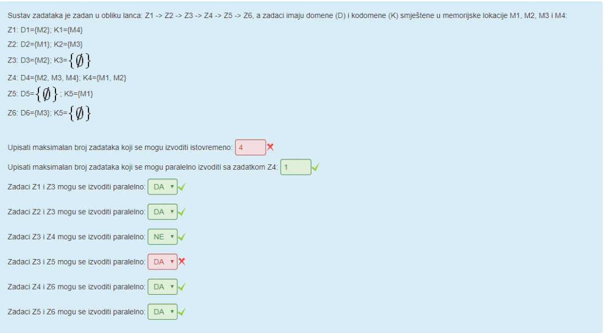
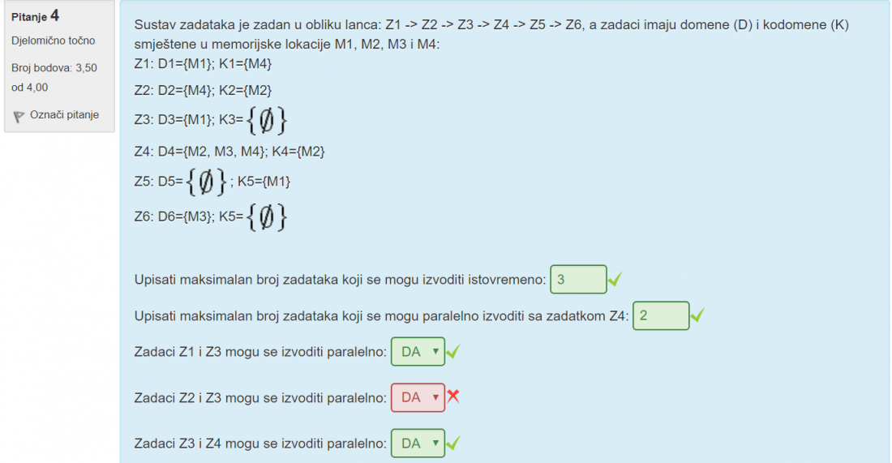

ink mehanizam međusobnog isključivanja mora djelovati i u uvjetima kada su brzine izvođenja dretvi proizvoljne, tak da bih rekao da je odgovor NE
I meni je taj malo nejasan. Mislim da nije bitna brzina nego to da mogu istovremeno uci
Peterson koristi istu strukturu kao i Dekker?
niknik Da, zastavica[2] i pravo.
MA zar nije tamo NE_PRAVO?
Lyras to je isto kao i PRAVO
Suki7 Pa kako može biti bool i negirani bool isto? Po definiciji su suprotnosti. Možemo koristiti PRAVO kao NE_PRAVO, da, ali onda smo mogli označiti i ZADNJI_BROJ, jer bi i on radio kao zastavica. Logički je točno ali semantički zbunjujuće.
Lyras U snimljenom predavanju ima riješeno s varijablom PRAVO u koju stavljaš index suprotne dretve. To je onda stvar kao da u NE_PRAVO staviš index trenutne
mt09 u knjizi koriste NE_PRAVO… ak mi oduzmu bodove strijeljam.
Lyras Da, znam. Slažem se, bezveze…

Zašto se Z3 i Z5 ne mogu izvoditi paralelno?
Lyras jel nije da z5 ovisi o z4, a z4 ovisi o 3 zadatka medu kojima je i z3 pa zato?
Lyras Pretpostavljam da si stavio da z5 ovisi samo o z2 umjesto da z5 ovisi o z4. Onda ti z4 ovisi o z1, z2 i z3, a z5 ovisi o z4 stoga se z3 i z5 ne mogu izvodit istovremeno.
Ja sam imao ovaj, mislim da je doslo do pogreske 
kerovac I ja mislim
Zasto kod Lamporta mora biti oznacen i int ZADNJI_BROJ kad se u knjizi uopce ne spominje spremanje zadnjeg broja u zasebnu varijablu, vec se racuna biranjem max vrijednosti? Cak smo i na labosima radili ko u knjizi.
gasaf na prezentacijama ju koriste
MrDREDD Cekamo odgovor na mail onda 😃
Ja sam totalno s krivom koncepcijom rješio zadatak i nekako dobio 75% bodova lmao goteem
Lyras Da, ja sam samo za parove zadataka isprobavao uvjet nezavisnosti. I onda uzeo najveće skupove nezavisnih. Uopće nisam imo pojma da zadaci ovise o zadacima, kao kronološki